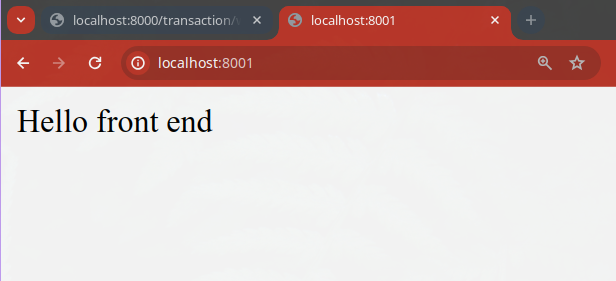

WebSockets
O que é
O protocolo ws:// é uma abreviação de WebSocket e é usado para estabelecer uma conexão bidirecional entre um cliente (como um navegador da web) e um servidor web. Aqui estão alguns pontos-chave sobre o protocolo ws://:
-
Bidirecionalidade: Com o protocolo ws://, tanto o cliente quanto o servidor podem enviar mensagens um para o outro em tempo real, sem a necessidade de esperar por uma solicitação do cliente. Isso é diferente do HTTP tradicional, onde o cliente precisa solicitar informações do servidor a cada interação.
-
Comunicação em tempo real: O protocolo ws:// é ideal para aplicativos da web que exigem atualizações em tempo real, como jogos multiplayer, salas de bate-papo ao vivo, feeds de notícias em tempo real e colaboração em tempo real.
-
Eficiência: Em comparação com soluções baseadas em polling (em que o cliente solicita repetidamente informações do servidor), os WebSockets são mais eficientes, pois estabelecem uma conexão persistente entre o cliente e o servidor. Isso reduz a sobrecarga de rede e os atrasos associados às solicitações HTTP repetidas. NOTA: Isto vem com um custo de performance na gestão de conexões.
-
Suporte: A maioria dos navegadores modernos e servidores web suporta o protocolo ws://, tornando-o uma escolha popular para desenvolvedores que desejam criar aplicativos da web interativos e em tempo real.
Em resumo, o protocolo ws:// é uma tecnologia de comunicação em tempo real que permite uma conexão persistente e bidirecional entre clientes e servidores web, facilitando a criação de aplicativos da web interativos e em tempo real.
Importante
Se você criou o seu repositório fork antes de 14/03/2024 pode ser que você tenha que atualizar algumas extensões locais para que seu projeto continue funcionando, devido a mudanças no Pydantic e SQLALchemy. `
Pode ver as alterações e efetuar as mudanças manualmente com o seguinte link: https://github.com/rochacbruno/dundie-api/commit/33fb2747ac2b57a50a202eb67825aaff02036fa5
Se preferir pode aplicar as mudanças localmente com o seguinte script:
curl https://github.com/rochacbruno/dundie-api/commit/33fb2747ac2b57a50a202eb67825aaff02036fa5.patch | git apply -v
Instalação do websockets
A biblioteca websockets precisa estar instalada no ambiente onde vamos servir o websocket.
Edite o arquivo requirements.in e adicione a biblioteca websockets ao final do arquivo.
websockets # Web Sockets
Em seu computador (fora do container) execute:
pip install pip-tools
pip-compile requirements.in
cat requirements.txt | grep websockets
websockets==12.0 (pode ser que a versão seja diferente no momento que vc executar)
Agora devemos fazer o rebuild dos containers:
docker compose down
docker compose build api
docker compose up -d
E agora podemos entrar no shell para se certificar de que tudo está funcionando:
❯ docker compose exec api dundie shell
Auto imports: ['settings', 'engine', 'select', 'session', 'User', 'Transaction', 'Balance', 'add_transaction']
In [1]: from websockets.version import version
In [2]: version
Out[2]: '12.0'
Websocket Server
O primeiro passo é criar do lado servidor um endpoint (URL) que iniciará uma conexão usando o protocolo ws
e o FastAPI já tem suporte nativo a este tipo de protocolo.
Editaremos o arquivo dundie/routes/transaction.py e vamos criar um websocket para fazer stream de transações,
dessa forma o usuário vai conseguir acompanhar as transações em tempo real sem precisar dar refresh no client (navegador)
Vamos com algo simples para entender o funcionamento de um websocket.
from fastapi import APIRouter, Body, Depends, HTTPException, WebSocket # New
...
@router.websocket("/ws")
async def list_transactions_ws(websocket: WebSocket):
await websocket.accept()
while True:
data = await websocket.receive_text()
await websocket.send_text(f"Message text was: {data}")
O FastAPI ainda não suporta exibir o endpoint websocket no /docs portanto esta URL não será exibida, a boa prática é adicionar documentação sobre este endpoint manualmente em seu endpoint correspondente ou em forma de texsto puro.
Websocket client
Para testar precisaremos escrever um pouco de JavaScript diretamente no navegador e para facilitar recomendo abrir um terminal e um browser lado a lado.
O passo a passo:
- Observamos os logs da API com
docker compose logs api --follow - No navegador tentamos abrir a URL http://localhost:8000/transaction/ws e obteremos o erro 405, não tem problema!
- Abriremos o painel de inspect do navegador e clicaremos em console onde iremos escrever algumas instruções em JavaScript.
- Criamos um client
wsno JS comvar ws = new WebSocket("ws://localhost:8000/transaction/ws"); - Definimos um event listener para quando recebermos uma mensagem via ws com
ws.onmessage = function(event) {console.log(event.data)};e por enquanto nosso listener apenas vai imprimir a mensagem no console. - Enviamos uma mensagem ao servidor com
ws.send("Hello") - A mensagem é enviada ao servidor e processada, retornando ao client (repare a adição de "Message text was: ...")
Toda esta comunicação acontece utilizando um único socket de comunicação, mantendo o estado da conexão, diferente das conexões HTTP que vimos até agora.
O console em detalhe:
Criando o front-end
O objetivo até aqui é falar sobre o lado back-end apenas, nosso foco está na API e endpoints, porém para obter a experiência completa vamos precisar de um front-end então faremos uma interface muito simples para ser usada de client para nossa API.
O que faremos:
- Criar um novo serviço no docker-compose que vai servir apenas o front-end
- Usar o servidor NGINX para servir o front-end
- Criar o front-end usando uma página estática HTML
Vamos começar simples assim, no futuro iremos deixar este front-end mais robusto, mas no momento o que importa é apenas fazer a conexão com o websocket.
No docker-compose.yaml vamos adicionar mais um serviço, logo após worker.
services:
worker:
...
ui:
image: nginx
ports:
- "8001:80"
volumes:
- ./ui:/usr/share/nginx/html
volumes:
...
Repare que estamos mapeando uma pasta local chamada ./ui que é onde estará o
nosso site estático com páginas html.
mkdir ui
echo "Hello front end" > ui/index.html
Agora vamos dar o restart nos containers.
docker compose down
docker compose up -d
Na primeira execução pode demorar um pouco mais pois a imagem do nginx será baixada, mas assim que os containers estiverem em execução abra a URL http://localhost:8001 onde está sendo servido nosso front-end.

Experimente editar o arquivo ui/index.html e depois façá refresh na URL para ver se as mudanças serão refletidas.
HTML
Não espere muito do nosso HTML, aqui temos um programdor backend tentando criar uma interface :) será simples para apenas funcionar!
Edite o ui/index.html e adicione o seguinte código.
<!DOCTYPE html>
<html lang="en">
<head>
<meta charset="UTF-8">
<meta name="viewport" content="width=device-width, initial-scale=1.0">
<title>WebSocket Transactions</title>
</head>
<body>
<h1>Transaction List</h1>
<ul id="transaction-list"></ul>
<script>
// Function to create and append a new <li> element to the list
function appendTransactionToList(transaction) {
var transactionList = document.getElementById("transaction-list");
var listItem = document.createElement("li");
listItem.textContent = transaction.to + " - " + transaction.from + " - " + transaction.value;
transactionList.appendChild(listItem);
}
// Connect to WebSocket endpoint
var ws = new WebSocket("ws://localhost:8000/transaction/ws");
// Event listener for WebSocket connection opened
ws.onopen = function(event) {
console.log("WebSocket connection opened");
};
// Event listener for incoming messages
ws.onmessage = function(event) {
console.log("New message received:", event.data);
// Parse JSON data
var transaction = JSON.parse(event.data);
// Append transaction to list
appendTransactionToList(transaction);
};
// Event listener for WebSocket connection closed
ws.onclose = function(event) {
console.log("WebSocket connection closed");
};
// Event listener for WebSocket connection error
ws.onerror = function(event) {
console.error("WebSocket error:", event);
};
</script>
</body>
</html>
O próximo passo é implementar no endpoint o retorno das ultimas transactions.
@router.websocket("/ws")
async def list_transactions_ws(websocket: WebSocket, session: Session = ActiveSession):
await websocket.accept()
last = 0
while True:
# Read all transactions that have not been seen yet
new_transactions = session.exec(select(Transaction).where(Transaction.id > last).order_by("id"))
for transaction in new_transactions:
data = {
"to": transaction.user.name,
"from": transaction.from_user.name,
"value": transaction.value,
}
await websocket.send_json(data)
# set the last sent ID to avoid duplication
last = transaction.id
# Sleep 1 second (just to see better on UI)
await sleep(1)
Agora podemos salvar e abrir o endereço http://localhost:8001 que inicialmente irá exibir uma tela vazia, porem
pode abrir o inspect do navegador para ver a mensagem de conexão ao websocket e tambem verificar a mesma informação
nos logs do container de API.
Através do terminal vamos verificar quais users existem no sistema
❯ docker compose exec api dundie user-list
dundie users
┏━━━━━━━┳━━━━━━━━━━┳━━━━━━━━━━━━┳━━━━━━━━━━━━━━┳━━━━━━━━━━┓
┃ name ┃ username ┃ dept ┃ email ┃ currency ┃
┡━━━━━━━╇━━━━━━━━━━╇━━━━━━━━━━━━╇━━━━━━━━━━━━━━╇━━━━━━━━━━┩
│ Admin │ admin │ management │ admin@dm.com │ USD │
│ user3 │ user3 │ sales │ user3@dm.com │ USD │
│ user1 │ user1 │ management │ user1@dm.com │ USD │
│ user2 │ user2 │ sales │ user2@dm.com │ USD │
└───────┴──────────┴────────────┴──────────────┴──────────┘
E agora com a tela do browser aberta lado a lado vamos adicionar transactions.
**PERFORMANCE** e **DISPONIBILIDADE**
Nossa implementação do endpoint `list_transactions_ws` não está boa, existem certos problemas que podem influenciar
a performance e a escalabilidade, isso se deve ao fato de que para cada cliente que estiver conectado (aba aberta no browser)
do lado servidor será preciso manter uma conexão ws, uma session com o banco de dados e todo o restante do estado.
Considere um site que recebe milhares de requests simultaneos, isso pode ser um grande problema!
Para resolver estes problemas será preciso mudar a implementação para:
- Evitar a execução de queries SQL, lendo a partir de um cache ou tópico em uma fila de stream (redis/kafka)
- Se usar SQL devemos usar um driver async, o driver atual não é async, teriamos que usar um do SQLAlchemy 2.0
- Usar um pool de conexões websocket
- Tratar o fechamento das conexões
E além dessas mudanças na aplicação tambem será necessário colocar nosso servidor para executar em um load-balancer para
que tenha alta disponibilidade.
Nós não vamos resolver os problemas acima agora, em nosso ambiente controlado o máximo que vai acontecer é conexões simultaneas darem timeout, tente por exemplo abrir mais de uma vez a página no browser, em abas separadas, abrindo assim diferentes sockets, tambem tente fazer uma requisição normal a API em http://localhost:8000/docs e você vai perceber que o servidor não será capaz de servir todas essas conexões.
O que podemos fazer neste momento?
Escalar Horizontalmente!
Vamos editar o arquivo Dockerfile.dev e aumentar a quantidade de workers uvicorn, e também será necessário
remover a funcionalidade de reload automático, pois o uso de --reload faz com que o uvicorn execute de modo bloqueante.
-CMD ["uvicorn","dundie.app:app","--host=0.0.0.0","--port=8000", "--reload"]
+CMD ["uvicorn","dundie.app:app","--host=0.0.0.0","--port=8000", "--workers=8"]
Após alterar o Dockerfile precisaremos fazer o rebuild da imagem e executar novamente
docker compose down
docker compose build api
docker compose up -d
Agora sim a nossa API estará executando com 8 workers, capazes de servir mais requisições e segurar mais sockets abertos.
api-1 | INFO: Uvicorn running on http://0.0.0.0:8000 (Press CTRL+C to quit)
api-1 | INFO: Started parent process [1]
api-1 | INFO: Started server process [13]
api-1 | INFO: Waiting for application startup.
api-1 | INFO: Application startup complete.
api-1 | INFO: Started server process [10]
api-1 | INFO: Waiting for application startup.
api-1 | INFO: Application startup complete.
api-1 | INFO: Started server process [9]
api-1 | INFO: Waiting for application startup.
api-1 | INFO: Application startup complete.
api-1 | INFO: Started server process [14]
api-1 | INFO: Waiting for application startup.
api-1 | INFO: Application startup complete.
api-1 | INFO: Started server process [12]
api-1 | INFO: Waiting for application startup.
api-1 | INFO: Application startup complete.
api-1 | INFO: Started server process [11]
api-1 | INFO: Waiting for application startup.
api-1 | INFO: Started server process [15]
api-1 | INFO: Application startup complete.
api-1 | INFO: Waiting for application startup.
api-1 | INFO: Application startup complete.
api-1 | INFO: Started server process [8]
api-1 | INFO: Waiting for application startup.
api-1 | INFO: Application startup complete.
Experimentando
Temos 8 workers, isso quer dizer que podemos abrir pelo menos 7 sockets ao mesmo tempo e ainda ter um livre para receber as requisições HTTP.
- Experimente abrir várias abas no endereço http://localhost:8001 (dica: O browser permite clicar com o direito e duplicar a aba)
- Adicione uma transaction no CLI e veja se aparece em todas as abas
docker compose exec api dundie transaction admin 123 - tente abrir http://localhost:8000/docs e executar o endpoint
List Users
Você vai perceber que dentro dessas limitações irá funcionar, mas ainda assim não é o ideal.
Melhorias
Uma das melhorias é criando em nossa aplicação um ConnectionManager para gerenciar a lista de conexões ws, na documentação
do FastAPI o procedimente é explicado em detalhes https://fastapi.tiangolo.com/advanced/websockets/#handling-disconnections-and-multiple-clients
Testando
Para testar o endpoint WS podemos usar o mesmo client que usamos para testar os endpoints HTTP, vamos adicionar o seguinte
teste ao arquivo tests/test_api.py
@pytest.mark.order(6)
def test_admin_can_list_all_transactions_ws(api_client_admin):
"""Admin can list all 4 transactions on ws endpoint"""
with api_client_admin.websocket_connect("/transaction/ws") as ws:
for i in range(4):
data = ws.receive_json()
assert data.keys() == {"to", "from", "value"}
Executando o teste
❯ ./test.sh
[+] Running 5/6
⠸ Network dundie-api_default Created 1.3s
✔ Container dundie-api-ui-1 Started 0.7s
✔ Container dundie-api-db-1 Started 0.5s
✔ Container dundie-api-redis-1 Started 0.8s
✔ Container dundie-api-api-1 Started 0.8s
✔ Container dundie-api-worker-1 Started 1.2s
INFO [alembic.runtime.migration] Context impl PostgresqlImpl.
INFO [alembic.runtime.migration] Will assume transactional DDL.
INFO [alembic.runtime.migration] Running stamp_revision 9aa820fb7f01 ->
INFO [alembic.runtime.migration] Context impl PostgresqlImpl.
INFO [alembic.runtime.migration] Will assume transactional DDL.
INFO [alembic.runtime.migration] Running upgrade -> f39cbdb1efa7, initial
INFO [alembic.runtime.migration] Running upgrade f39cbdb1efa7 -> b0abf3428204, transaction
INFO [alembic.runtime.migration] Running upgrade b0abf3428204 -> 8af1cd3be673, transaction1
INFO [alembic.runtime.migration] Running upgrade 8af1cd3be673 -> 6f4df3b5e155, transaction2
INFO [alembic.runtime.migration] Running upgrade 6f4df3b5e155 -> 9aa820fb7f01, ensure_admin_user
================================ test session starts =================================
platform linux -- Python 3.10.13, pytest-8.1.1, pluggy-1.4.0 -- /usr/local/bin/python
cachedir: .pytest_cache
rootdir: /home/app/api
configfile: pyproject.toml
plugins: order-1.2.0, anyio-4.3.0
collected 11 items
tests/test_api.py::test_user_list PASSED [ 9%]
tests/test_api.py::test_user_detail PASSED [ 18%]
tests/test_api.py::test_update_user_profile_by_admin PASSED [ 27%]
tests/test_api.py::test_update_user_profile_by_user PASSED [ 36%]
tests/test_api.py::test_fail_update_user_profile_by_other_user PASSED [ 45%]
tests/test_api.py::test_add_transaction_for_users_from_admin PASSED [ 54%]
tests/test_api.py::test_user1_transfer_20_points_to_user2 PASSED [ 63%]
tests/test_api.py::test_user_list_with_balance PASSED [ 72%]
tests/test_api.py::test_admin_can_list_all_transactions PASSED [ 81%]
tests/test_api.py::test_regular_user_can_see_only_own_transaction PASSED [ 90%]
tests/test_api.py::test_admin_can_list_all_transactions_ws PASSED [100%]
================================= 11 passed in 8.08s =================================
[+] Running 6/6
✔ Container dundie-api-worker-1 Removed 1.0s
✔ Container dundie-api-ui-1 Removed 0.3s
✔ Container dundie-api-api-1 Removed 2.4s
✔ Container dundie-api-redis-1 Removed 0.3s
✔ Container dundie-api-db-1 Removed 0.3s
✔ Network dundie-api_default Removed 0.1s
Conclusão
O FastAPI junto com o Starlette permite implementar websockets de maneira bastante simples, mas como é um micro-framework
limita-se a entregar a parte de comunicação entre client e server respeitando o protocolo ws://.
Qualquer melhoria adicional precisará ser ajustada tanto na plataforma que serve a aplicação, como uvicorn, caches, load-balancers, proxies,
como também através da utilização de drivers assincronos para acesso ao banco de dados assim como o uso de streams de dados ao invés de
conexões a bancos de dados relacionais.